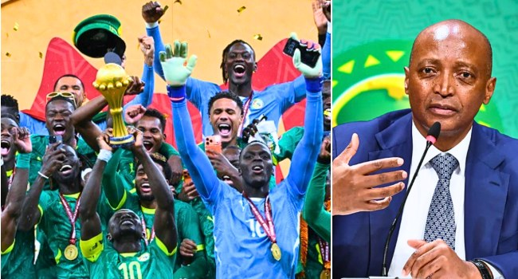

CAF Reverses Four-Year AFCON Plan, Restores Biennial Tournament

CAF Reverses Four-Year AFCON Plan, Restores Biennial Tournament
The Confederation of African Football has reversed its decision to stage the Africa Cup of Nations every four years. The CAF Executive Committee unanimously agreed that the tournament would return to a two-year cycle, the governing body said.
CAF President Patrice Motsepe had said at the organisation’s Strategy Conference in Cabo Verde, held from October 7 to 9, 2026, that the committee would review the four-year plan. The proposed Africa Nations League was expected to replace the biennial AFCON, but CAF concluded it could take several years for the new competition to generate revenue at a level that supports its competitions and football development across the continent.
Motsepe said the decision was intended to protect African football, CAF’s 54 member associations and African players employed by clubs outside the continent. He said the Africa Nations League was expected to deliver financial and development benefits similar to AFCON, but would need time to do so. CAF expects the return to a two-year schedule to provide greater financial benefits for the organisation and its member associations and support the growth of football in Africa.
The next tournament will be held in 2027 in Kenya, Tanzania and Uganda. CAF’s announced schedule also includes editions in 2028, 2031 and 2033. There will be no AFCON in 2030 because the FIFA World Cup is scheduled for that year; Motsepe said CAF national-team competitions would not be held in the same year as the World Cup, in keeping with FIFA’s tradition.
Motsepe expressed confidence in the three-country hosting arrangement for 2027. He also described AFCON as a platform to celebrate Africa’s diverse cultures and bring together people from the continent’s 54 countries, the African diaspora and the rest of the world.
Source: Channels TV